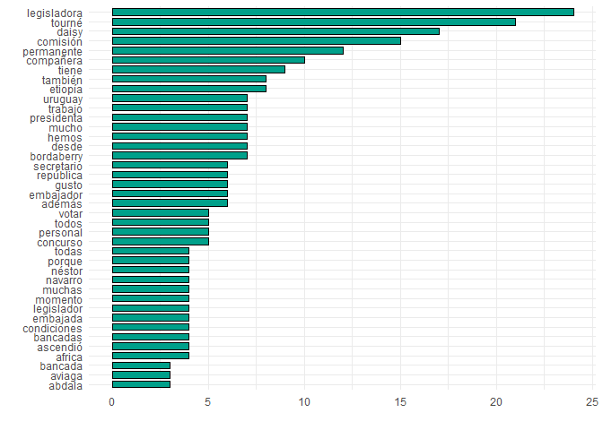

Maintainer
Nicolas Schmidt (nschmidt@cienciassociales.edu.uy)
speech package Nicolás Schmidt, Diego Luján, Juan Andrés Moraes
Converts the floor speeches of Uruguayan legislators, extracted from the parliamentary minutes, to tidy data.frame where each observation is the intervention of a single legislator.
# Install speech from CRAN
install.packages("speech")
# The development version from GitHub:
if (!require("remotes")) install.packages("remotes")
remotes::install_github("Nicolas-Schmidt/speech")
library(speech)
url <- "https://parlamento.gub.uy/documentosyleyes/documentos/diario-de-sesion/comisionpermanente/6084/IMG/0?width=800&height=600&hl=en_US1&iframe=true&rel=nofollow"
text <- speech::speech_build(file = url)
text
#> # A tibble: 24 x 7
#> legislator speech chamber date legislature id sex
#> <chr> <chr> <chr> <date> <int> <chr> <dbl>
#> 1 BORDABERRY SEÑOR BORDABER~ COMISION~ 2019-09-17 48 0?width=80~ 1
#> 2 BORDABERRY SEÑOR BORDABER~ COMISION~ 2019-09-17 48 0?width=80~ 1
#> 3 AVIAGA SEÑORA AVIAGA.~ COMISION~ 2019-09-17 48 0?width=80~ 0
#> 4 AVIAGA SEÑORA AVIAGA.~ COMISION~ 2019-09-17 48 0?width=80~ 0
#> 5 GOÑI SEÑOR GOÑI. Pi~ COMISION~ 2019-09-17 48 0?width=80~ 1
#> 6 GOÑI SEÑOR GOÑI. El~ COMISION~ 2019-09-17 48 0?width=80~ 1
#> 7 MAHIA SEÑOR MAHIA. P~ COMISION~ 2019-09-17 48 0?width=80~ 1
#> 8 MAHIA SEÑOR MAHIA. G~ COMISION~ 2019-09-17 48 0?width=80~ 1
#> 9 ABDALA SEÑOR ABDALA. ~ COMISION~ 2019-09-17 48 0?width=80~ 1
#> 10 ASTI SEÑOR ASTI. Ob~ COMISION~ 2019-09-17 48 0?width=80~ 1
#> # ... with 14 more rows
speech_check(text, initial = c("A", "M"))
#> $A
#> legislator
#> 1 ABDALA
#> 2 ASTI
#> 3 AVIAGA
#>
#> $M
#> legislator
#> 1 MAHIA
#> 2 MERONI
text <- speech::speech_build(file = url, compiler = TRUE)
text
#> # A tibble: 11 x 7
#> legislator legislature chamber date id speech sex
#> <chr> <int> <chr> <date> <chr> <chr> <dbl>
#> 1 ABDALA 48 COMISION~ 2019-09-17 0?width=800~ SEÑOR ABDALA.~ 1
#> 2 ASTI 48 COMISION~ 2019-09-17 0?width=800~ SEÑOR ASTI. O~ 1
#> 3 AVIAGA 48 COMISION~ 2019-09-17 0?width=800~ SEÑORA AVIAGA~ 0
#> 4 BORDABERRY 48 COMISION~ 2019-09-17 0?width=800~ SEÑOR BORDABE~ 1
#> 5 GOÑI 48 COMISION~ 2019-09-17 0?width=800~ SEÑOR GOÑI. P~ 1
#> 6 LAZO 48 COMISION~ 2019-09-17 0?width=800~ SEÑORA LAZO. ~ 0
#> 7 MAHIA 48 COMISION~ 2019-09-17 0?width=800~ SEÑOR MAHIA. ~ 1
#> 8 MERONI 48 COMISION~ 2019-09-17 0?width=800~ SEÑOR MERONI.~ 1
#> 9 PEREYRA 48 COMISION~ 2019-09-17 0?width=800~ SEÑORA PEREYR~ 0
#> 10 TOURNE 48 COMISION~ 2019-09-17 0?width=800~ SEÑORA TOURNE~ 0
#> 11 VIERA 48 COMISION~ 2019-09-17 0?width=800~ SEÑOR VIERA. ~ 1
text$word <- speech_word_count(text$speech)
dplyr::glimpse(text)
#> Rows: 11
#> Columns: 8
#> $ legislator <chr> "ABDALA", "ASTI", "AVIAGA", "BORDABERRY", "GOÑI", "LAZO", ~
#> $ legislature <int> 48, 48, 48, 48, 48, 48, 48, 48, 48, 48, 48
#> $ chamber <chr> "COMISION PERMANENTE", "COMISION PERMANENTE", "COMISION PE~
#> $ date <date> 2019-09-17, 2019-09-17, 2019-09-17, 2019-09-17, 2019-09-17~
#> $ id <chr> "0?width=800&height=600&hl=en_US1&iframe=true&rel=nofollo~
#> $ speech <chr> "SEÑOR ABDALA. Voto por la señora legisladora Daisy Tourné~
#> $ sex <dbl> 1, 1, 0, 1, 1, 0, 1, 1, 0, 0, 1
#> $ word <int> 400, 46, 107, 963, 100, 103, 128, 12, 12, 111, 8
library(magrittr)
minchar <- function(string, min = 3){
string <- stringr::str_remove_all(string, "[[:punct:]]")
string <- unlist(strsplit(string, " "))
string[nchar(string) > min]
}
text$speech %>%
minchar(., min = 4) %>%
quanteda::corpus() %>%
quanteda::dfm(remove = c("señor", "señora")) %>%
quanteda.textplots::textplot_wordcloud(color = rev(RColorBrewer::brewer.pal(10, "RdBu")))
library(ggplot2)
text$speech %>%
minchar(., min = 4) %>%
tibble::enframe() %>%
tidytext::unnest_tokens(word, value) %>%
dplyr::count(word, sort = TRUE) %>%
dplyr::mutate(word = stats::reorder(word, n)) %>%
dplyr::filter(!stringr::str_detect(word, "^señor")) %>%
.[1:40,] %>%
ggplot(aes(word, n)) +
geom_col(col = "black", fill = "#00A08A", width = .7) +
labs(x = "", y = "") +
coord_flip() +
theme_minimal()
To cite packagespeech in publications, please use:
citation(package = 'speech')
#>
#> To cite package 'speech' in publications use:
#>
#> Nicolas Schmidt, Diego Lujan and Juan Andres Moraes (NA). speech:
#> Legislative Speeches. R package version 0.1.3.
#> https://github.com/Nicolas-Schmidt/speech
#>
#> A BibTeX entry for LaTeX users is
#>
#> @Manual{,
#> title = {speech: Legislative Speeches},
#> author = {Nicolas Schmidt and Diego Lujan and Juan Andres Moraes},
#> note = {R package version 0.1.3},
#> url = {https://github.com/Nicolas-Schmidt/speech},
#> }Nicolas Schmidt (nschmidt@cienciassociales.edu.uy)